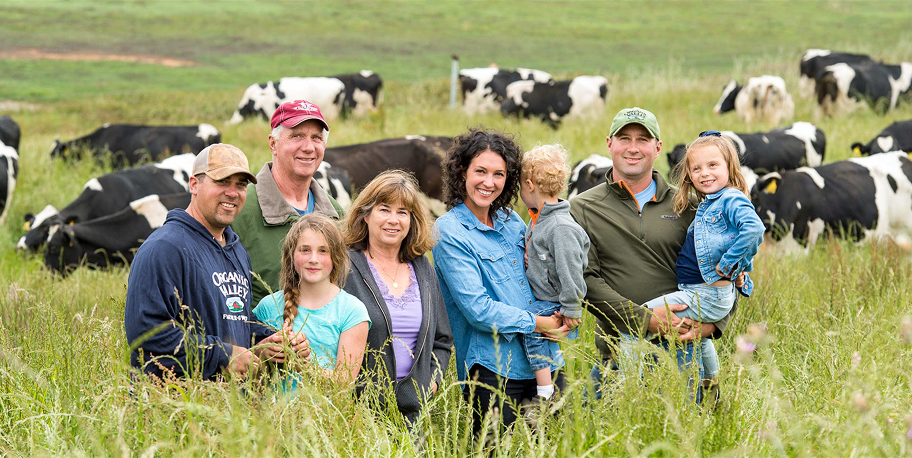

Rome's non profitable orginization provides you with rich information, images, and reviews for the free range animals and our local farms.
There are hundreds of farms in Kentucky farming system, spread out across the state so you’re not too far from being able to observe what we do for our wildlife.

Location
9217 Marlboro Circle
Enjoy your time with your kids relaxing at the farm grounds by giving tending to the animals at one of our farms.
Dog Creek Campgrounds
our farms sit on 100s of acres of land surrounding KY with lakes, ponds, hills, tress and amenities to keep our animals happy. Partnering up with other non profitable orginizations we are putting together a no kill shelter within the next year. A dog wingman is more than the go-to pet for young folks looking to meet a special someone at the dog park. Other than insecure teens, no creature on earth requires more attention, petting and baby talk than dogs. The difference is, dogs go after what they want -- case in point: the ground beef you leave on the counter top. All owners have to do is follow their dog's lead.
Whether it's romance or friendship, your dog wingman has your back. Well, it has your back if it's a Great Dane or something (just the lower half, though, if it's a smaller dog). The point is, your dog wingman definitely has at least some of your extremities covered. You can use a dog wingman in any social setting to help break the ice. Fido can up the number of friends and more-than-friends you have on and off of Facebook.
You could say, "Sorry my dog sniffed you in such a, um, friendly way! We might as well make some more small talk and become the kind of friends who grab lattes together sometimes and talk about our Netflix habits." Or you can let your canine cohort lead you and another person to common ground. "I see you let your kids off leash, I do that with my dog sometimes, too."